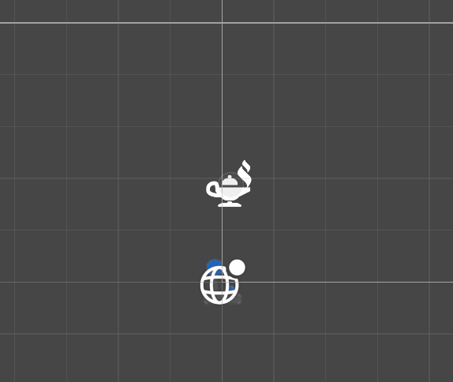

The project
you need to defeat enemies with the cards you have while not taking to much damage.
Mechanics & features
- Feature 1: you can use cards on enemies and the enemies take damage with how much damage is on the card.
- Feature 2:You can draw and discard your hand each turn
Code snippet
void UpdateArc(Vector3 start, Vector3 mid, Vector3 end)
{
int numDots = Mathf.CeilToInt(Vector3.Distance(start, end) / (spacing * spacingScale));
for (int i = 0; i < numDots && i < dotPool.Count; i++)
{
float t = i / (float)numDots;
t = Mathf.Clamp(t, 0f, 1f); // Ensure t stays within the range [0, 1]
Vector3 position = QuadraticBezierPoint(start, mid, end, t);
if (i != numDots - dotsToSkip)
{
dotPool[i].transform.position = position;
dotPool[i].SetActive(true);
}
if (i == numDots - (dotsToSkip + 1) && i - dotsToSkip + 1 >= 0)
{
arrowDirection = dotPool[i].transform.position;
}
}
// Deactivate unused dots
for (int i = numDots - dotsToSkip; i < dotPool.Count; i++)
{
if (i > 0)
{
dotPool[i].SetActive(false);
}
}
}i use the QuadraticBezierPoint function to make an arc in the arc voor my game i made it using the dots in the if for the dotsToSkip i made it that way so that there is some spacing between the arrow and the dots because if i dont do that it goes inside the arrow.
Process & reflection
I need to focus more on completing than pushing things to the side till the final moments. Next time i am going to fully commit and not just do it
Media
here are a few VFX that i made for the combat of the game

